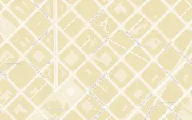

+10.000
Obras Georreferenciadas
Edificios con coordenadas exactas verificadas en el plano.
Descubre más de 10.000 obras maestras y edificios notables con radar de proximidad GPS, planificador de itinerarios de viaje y fichas técnicas verificadas por la comunidad.

Edificios con coordenadas exactas verificadas en el plano.
Desde grandes metrópolis hasta pequeños pueblos con arquitectura de autor.
Residencial, dotacional, industrial, religioso, comercial, paisaje e infraestructuras.
Sin muros de pago. Alimentado y supervisado por apasionados del espacio construido.
Nolli nace de una frustración compartida por miles de arquitectos y aficionados: la dificultad de encontrar información arquitectónica precisa en mapas comerciales pensados para el consumo y el tráfico vehicular.
Inspirado en el célebre plano de Roma trazado por Giambattista Nolli en 1748 —donde los espacios públicos y los interiores accesibles de los edificios se dibujaron como una trama continua abierta a la ciudadanía—, Nolli traslada esa visión al entorno digital contemporáneo.
No somos un directorio turístico genérico. Cada registro en Nolli es una ficha técnica rigurosa que incluye autoría verificada, año de inauguración, tipología funcional, estado de accesibilidad y coordenadas milimétricas. Toda la base de datos se despliega sobre un mapa vectorial fluido diseñado bajo los principios estéticos y funcionales de la Neo-Bauhaus.
Además, Nolli opera como una wiki viva: cualquier usuario registrado puede proponer obras que falten en su entorno, reportar erratas, adjuntar fotografías de campo o actualizar el estado de conservación de un edificio. Una curaduría comunitaria garantiza que la calidad documental se mantenga al más alto nivel profesional y académico.
Tanto si estás planificando tu próximo viaje de estudios como si te encuentras paseando por una ciudad extranjera, Nolli te ofrece las herramientas necesarias para desvelar el paisaje construido.
Activa la geolocalización de tu dispositivo móvil y el radar escaneará automáticamente el entorno en un radio configurable de 1, 3 o 5 kilómetros. Descubre de inmediato qué obras maestras o intervenciones singulares tienes a solo unos minutos a pie sin tener que buscarlas manualmente.

Organiza colecciones temáticas de obras para tus escapadas arquitectónicas o tus investigaciones académicas. Puedes crear listas públicas para compartir tu conocimiento con la comunidad o conservarlas en tu archivo privado. Visualiza la ruta óptima directamente trazada sobre el plano.

Lleva el registro interactivo de los edificios que has recorrido en persona. Marca obras como visitadas o favoritas, añade anotaciones técnicas y accede a tus estadísticas personales de exploración por ciudades, países y estilos para convertir tus viajes en un cuaderno de bitácora cartográfico.

Cada edificio cuenta con una URL pública e indexable con su autoría, periodo constructivo, fotografías documentadas, enlaces a publicaciones oficiales y ubicación exacta. Puedes compartir cualquier ficha técnica con un solo clic en artículos, redes sociales o clases lectivas.

Para evitar la saturación visual en ciudades de alta densidad histórica, cada obra se etiqueta en uno de cuatro niveles rigurosos, permitiéndote filtrar el mapa según la profundidad de tu consulta:
El viaje se justifica solo para ver este edificio.
Parada obligatoria en cualquier ruta arquitectónica.
Vale la pena desviarse unas calles para verla.
Está en el mapa, ideal si pasas por delante.
Nolli responde a las necesidades reales de quienes se relacionan profesional o vocacionalmente con la disciplina arquitectónica.
Un banco de referencias materiales y formales in situ. Consulta soluciones de fachada, detalles y programas funcionales mientras inspeccionas la ciudad.
El soporte perfecto para asignaturas de historia, composición y urbanismo. Genera bibliografías espaciales y analiza la evolución urbana de barrios completos.
Diseña viajes centrados en la calidad espacial. Evita las rutas trilladas y localiza joyas residenciales o equipamientos fuera de los circuitos comerciales.
Localiza con precisión monografías construidas, georreferencia archivos documentales y colabora en la preservación del patrimonio moderno.
Organizamos las más de 10.000 obras en siete grandes categorías para que puedas filtrar el mapa o consultar colecciones específicas con enlace directo:
Todo lo que necesitas saber acerca del funcionamiento técnico, los datos del catálogo y la filosofía colaborativa de la plataforma.